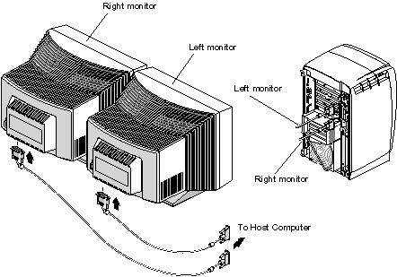
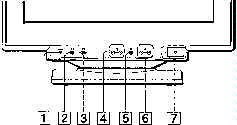
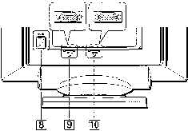
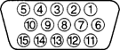

Operating Documentation
Direction 5193855-800, Rev# 4
LS 5.X RT Ltd. Access Service Information Adv
Operating Documentation |
Illustration 1: Video Monitor Connection to the Host Computer (Octane shown)

The light output from all color monitors is lower than the output from black and white monitors. For this reason, you need to be very careful when setting up the monitor brightness and contrast. Initially, the systems are set to factory defaults, but these can be adjusted. Refer to the “Installation Manual” for details on how to adjust the Brightness and Contrast for these monitors.
The technologist may perceive that the image on the monitor is “softer” than the image on the film, (i.e. they like the film, but they would like the image on the monitor to look like their film in terms of contrast and brightness). By now, you’ve probably guessed that due to the light output of the color monitor, you need to make the adjustment for Brightness and Contrast so that the technologist can see anatomical structure (window width) at the right amount of brightness (window level).
You can type < confidence > in a Unix shell, then select the monitor icon to have the host help you make some adjustments to the monitor.
Due to the Sony Trinitron picture tube design used in the Display Monitors, an artifact on the display is seen as two equal distance horizontal lines.
This artifact will NOT appear on films.
This artifact is NOT in the image, but rather is a function of the design of the monitor.
Illustration 2: Monitor Front Parts and Controls

Table 1: Front Parts and Controls
| ITEM | DESCRIPTION |
|---|---|
| 1 | Reset Button - This button resets the adjustments to the factory settings. |
| 2 | ASC (auto sizing and centering) Button - This button automatically adjusts the size and centering of the picture.Note: Do not use the ASC function, as it does not work properly with SGI video output. |
| 3 | Input Switch - This switch selects the INPUT 1 (video input 1 connector) or INPUT 2 (video input 2 connector) video input signal. |
| 4 | Brightness Buttons - These buttons display the Brightness/Contrast menu and function as the buttons when selecting menu items. |
| 5 | Menu Button - This button displays the main menu. |
| 6 | Contrast Buttons - These buttons
display the Brightness/Contrast menu and function as the  buttons
when selecting menu items. buttons
when selecting menu items. |
| 7 | Power Switch and Indicator - This button turns the monitor on and off. The power indicator lights up in green when the monitor is turned on, and either flashes in green and orange, or lights up in orange when the monitor is in power saving mode. |
Illustration 3: Monitor Rear Parts and Controls

Table 2: Rear Parts and Controls
| ITEM | DESCRIPTION |
|---|---|
| 8 | AC IN Connector - This connector provides AC power to the monitor. |
| 9 | Video Input 1 Connector - This connector inputs RGB video signals (0.700 Vp-p, positive) and sync signals. |
| 10 | Video Input 2 Connector - This connector inputs RGB video signals (0.700 Vp-p, positive) and sync signals. |
Illustration 4: Monitor Video Pin Connector

Table 3: Monitor Video Pin Connector Assignments
| ITEM | DESCRIPTION |
|---|---|
| 1 | Red |
| 2 | Green (Sync on Green) |
| 3 | Blue |
| 4 | ID (Ground) |
| 5 | DDC (Display Data Channel) Ground |
| 6 | Red Ground |
| 7 | Green Ground |
| 8 | Blue Ground |
| 9 | DDC + 5V |
| 10 | Ground |
| 11 | ID (Ground) |
| 12 | Bi-Directional Data (SDA) |
| 13 | Horizontal Sync |
| 14 | Vertical Sync |
| 15 | Data Clock (SDL) |